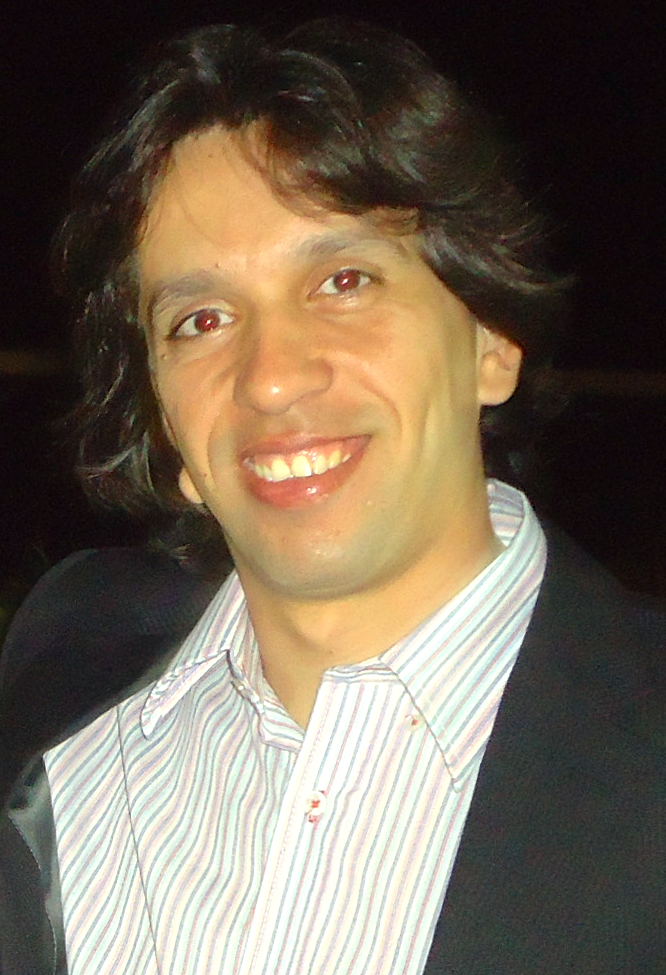
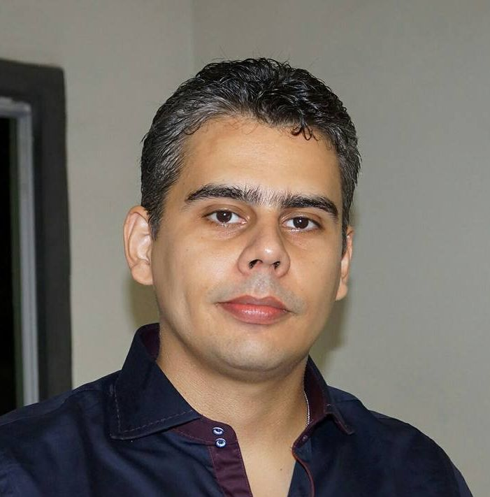

O Workshop de Tecnologia no Ensino Médio, TecBASE, é um fórum nacional que visa fomentar e divulgar os avanços em pesquisa aplicada alcançados pelas instituições de ensino que oferecem cursos de nível técnico em informática nas modalidade integrada, subsequente ou concomitante. O público-alvo desse evento é formado por estudantes que desenvolvam pesquisa aplicada, sob orientação ou não de um professor, em qualquer subárea da computação nestas instituições.
23/03/2016 – Resultado dos Artigos Aceitos
Lista de artigos aceitos
B. Alves, Ronan Lopes, Welton Sanches, Samuel Cassiano, Gabriel Montanha.
Desenvolvimento de um protótipo de uma rede social para engajamento em ações de preservação ambiental.
Luana Silva, George Júnior, Luís Otávio Santos de Andrade, Bruno Santos, Sandro Andrade.
Controle de Acesso a Empresas e Registro de Ponto Utilizando NFC (NEAR FIELD COMMUNICATION
Mayka Lima, Renato Nascimento, Greice Conceição.
Análise e Gerenciamento de Rede Utilizando a Ferramenta The Dude
Welerson Melo, Paulo Henrique R. de Souza, Nara Doria, Leila Buarque Couto Matos.
Controle de Robôs Móveis por Meio de Gestos Naturais
Katia Santos, Ivo Calado, Rafael Antonello.
REACT: Uma Arquitetura Elástica para Serviços de Automação Residencial
Lucas Barros, Henrique Barbosa, Walker Ataide.
Desenvolvimento de uma Ferramenta Computacional de Apoio ao Ensino de Algoritmos e Programação de Computadores
10/04/2016 – Entrega da versão final dos trabalhos aceitos
Os autores dos trabalhos aceitos NÃO serão dispensados do pagamento da inscrição na ERBASE, nem do pagamento dos minicursos e laboratórios. Além disso, a publicação do artigo nos anais do evento está condicionada à inscrição de pelo menos um dos autores no evento e à apresentação do trabalho na ERBASE.
Os trabalhos submetidos deverão estar em formato PDF, podendo ser escritos em português ou inglês. Os artigos não devem ultrapassar o limite de dez (10) páginas, incluindo tabelas, figuras e referências, seguindo o
padrão adotado pela Sociedade Brasileira de Computação (SBC).
As submissões deverão ser feitas exclusivamente por via eletrônica (
https://jems.sbc.org.br/home.cgi?c=2492). Os autores devem identificar-se apenas no formulário de submissão, mas não no artigo submetido. Quaisquer partes do artigo que possam de alguma forma identificar os autores ou instituições devem ser substituídas por "Xis" (Universidade Xis, por exemplo). Somente a versão final, caso aprovada, deverá conter os nomes dos autores e as respectivas instituições.
A seleção de trabalhos será realizada a partir da revisão por membros do comitê de programa do TecBASE 2016, sendo aceitos os trabalhos que atingirem os maiores índices, respeitado o limite máximo de apresentações definidas para o evento. O processo de revisão será conduzido de forma anônima (blind review) e qualquer proposta será analisada por pelo menos dois revisores. Os artigos selecionados serão apresentados em sessões técnicas e publicados nos anais do workshop da ERBASE.

Renato Novais (IFBA)
Doutor em Ciência da Computação pela Universidade Federal da Bahia (2013) com estágio sanduíche no Fraunhofer Center for Experimental Software Engineering, Maryland, USA. Professor do Instituto Federal da Bahia (IFBA).

Augusto Almeida (IFS)
Mestre em Ciência da Computação pela Universidade Federal de Campina Grande (2010). Professor do Instituto Federal de Sergipe (IFS), Campus Itabaiana.
● Alexandre Correia - Instituto Federal do Sertao Pernambucano
● Allan Freitas - Instituto Federal da Bahia
● Anderson Jerônimo - Faculdade da Cidade de Maceió
● Cledja Karina Rolim da Silva - Centro Federal de Educação Tecnológica de Alagoas
● Crescencio Lima Neto - Instituto Federal da Bahia
● Cristiane Santana - Instituto Federal de Sergipe
● Daniel Paiva - Universidade Tecnológica Federal do Paraná
● Daniel Sousa - Instituto Federal de Goiás
● David Lima - Instituto Federal de Alagoas
● Dinani Amorim - Universidade do Estado da Bahia
● Edison Junior - Instituto Federal da Alagoas
● Eduardo Damasceno - Universidade Tecnológica Federal do Paraná
● Eduardo Moraes - Instituto Federal da Alagoas
● Fabio Dias - Unisinos
● Fernando de Oliveira - Instituto Federal do Rio de Janeiro
● Francisco Borges - Instituto Federal da Bahia
● Gilson Santos Júnior - Instituto Federal de Sergipe
● Gilvan Durães - Instituto Federal Baiano
● Hélio Martins do Nascimento Júnior - Instituto Federal de Alagoas
● Heitor Barros - Instituto Federal de Alagoas
● Ivo Calado - Instituto Federal de Alagoas
● Ivo Sócrates - Instituto Federal do Tocantins
● Jonatas Bastos - Instituto Federal da Bahia
● Josildo Silva - Instituto Federal da Bahia
● Leandro Queiros - Universidade Federal Rural de Pernambuco
● Leila Buarque - Instituto Federal de Sergipe
● Luis Carvalho - Instituto Federal da Bahia
● Marcelo Borth - Instituto Federal do Paraná
● Marcelo Kwecko - Instituto Federal Sul-Rio-Grandense
● Marcilio Souza Junior - Instituto Federal de Alagoas
● Matheus D'Eça Torquato de Melo - Instituto Federal do Sertão Pernambucano
● Mário André Farias - Instituto Federal de Sergipe
● Necio Veras - Instituto Federal do Ceará
● Patricia Hubler - Instituto Federal do Rio Grande do Sul
● Rafael Reale - Instituto Federal da Bahia
● Raphael de Aquino Gomes - Instituto Federal de Goiás
● Raphael Oliveira - Instituto Federal de Sergipe
● Renata Morais - Instituto Federal de Sergipe
● Renato Novais - Instituto Federal da Bahia
● Ricardo Rubens Nunes Filho - Instituto Federal de Alagoas
● Rodrigo Remor Oliveira - Instituto Federal Sul Rio-Grandense
● Sandro Andrade - Instituto Federal da Bahia
● Silvia de Castro Bertagnolli - Instituto Federal do Rio Grande do Sul
● Simone Amorim - Instituto Federal da Bahia
● Tamer Cavalcante - Universidade Federal de Pernambuco
● Thiago Mendes - Instituto Federal da Bahia
● Thiers Ramos - Instituto Federal de Sergipe
● Walker Ataide - Instituto Federal de Alagoas
● Wanderson Roger Azevedo Dias - Instituto Federal de Sergipe